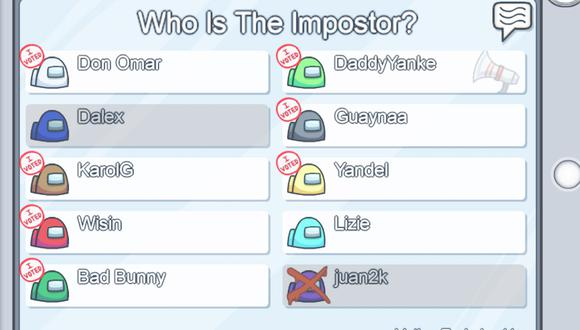
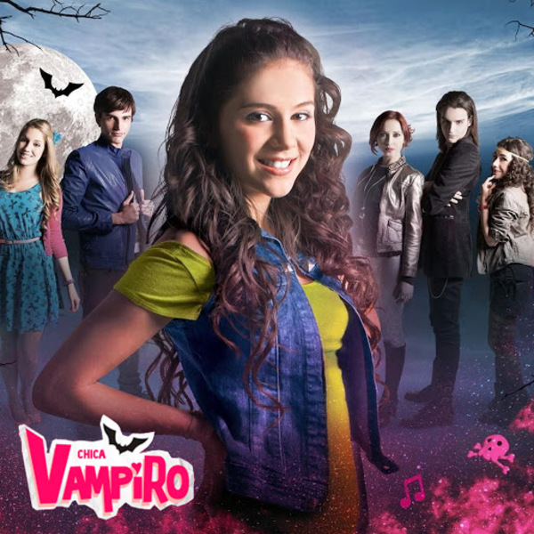
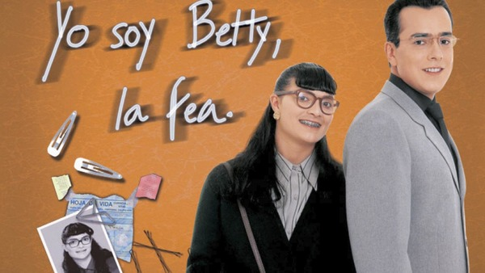
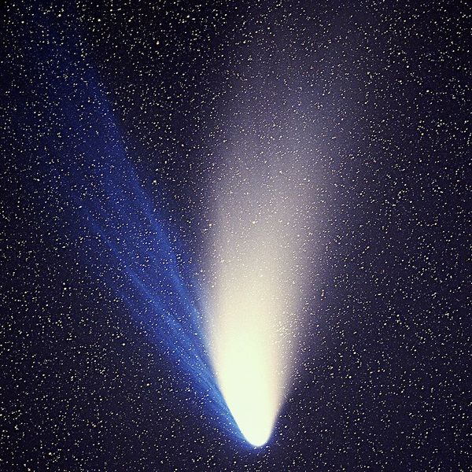
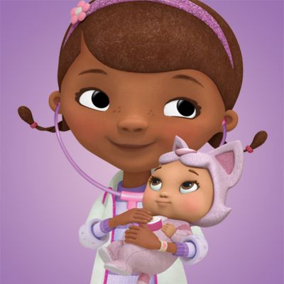
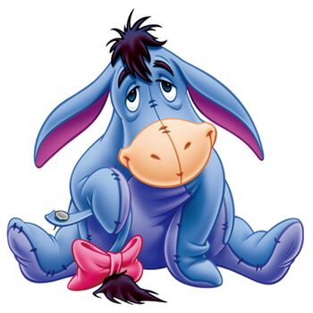
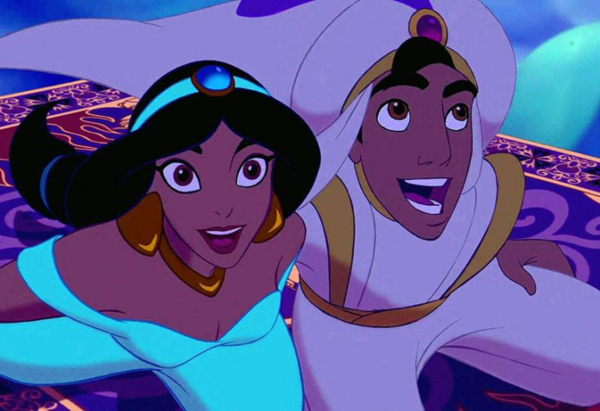
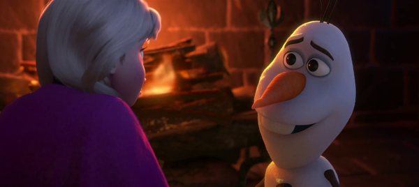
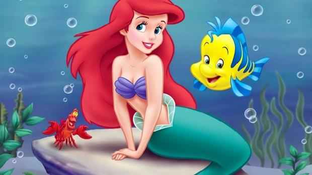

Hoy cumple años la persona que me enseño que nunca debo de rendirme, con la persona que me enseño que todo momento es tuyo, puede ser raro, aterrador, bonito o cualquier otra cosa, pero cada momento es tuyo, que nada puede pasar de otra manera, y que sin amor... no se puede vivir. Hoy cumple años la esposa más hermosa del mundo, la que cada vez que se pone una colita soy la persona más feliz del mundo, o cada vez que me besa, cada vez que me abraza, no lo sé... Cada vez que estoy con ella realmente, y verdaderamente soy el niño más feliz del mundo... Y esa persona tiene nombre, pero antes de hablar de su nombre, debo de hablar como si su nombre no existiera, como si fuera un enigma que debemos de resolver tú y yo, como si cada letra tuviera un significado, como si cada letra de su nombre significara algo para mi...

Palabra que sirve para designar los seres vivos o las cosas materiales o mentales; gramaticalmente funciona como núcleo de un sintagma nominal, y varía en cuanto al género y al número.Google
Si vemos la definición de nombre, te darás cuenta de que cambia con el género, y sirve para cualquier ser vivo, así que si seguramente eres perspicaz te habrás dado cuenta de que en el titulo de la página dice #16 de Mi Princesa, pero con esta cosa de los jóvenes de hoy en día de llamarse como se identifiquen incluso si se identifican como un pan, está difícil adivinar para quién es, ¿no?...

Si me preguntas a mí que pudiera definir a esta chica pues creo que el hecho de que este Ladybug al lado, pues creo que ya sabes que la define... Pero hay algo más, y es esto, Chica Vampiro y Betty la fea... Se pudiera decir que voy a hablar sobre toda la vida de esta chica, y de como la conocí, y sí. Eso es lo que diré en cada una de mis palabras por los siguientes grandes y largos párrafos.

Primero que nada, ¿qué se te viene a la mente cuando digo The space between us o Un puente hacia teravithia?, probablemente digas que son películas, cada una más vieja que la otra, y que seguramente estés leyendo esto en el 2044 y estas películas serán más viejas que charallave... Pero, con la persona de esta carta le llevo un cariño inmenso... Tal cual y el cariño que le llevo a la camisa rosada que siempre se pone jajaja... Como amo esa camisa, si pudiera casarme con algo, sería con esa camisa y con ella... Aunque, creo que ya lo hice.
Si tuviera que decir una frase que definiera lo que siento por esa persona, es que, sin importar si voy a marte, iría con ella para fastidiarla tanto que se moleste y se lance de la nave, y entonces me lanzaría con ella, y la encontraría en medio del espacio...

Así que creo que ya hable del amor que le siento a esa persona y como es, bueno creo que me falto eso... Ah... ¿qué tal si lo explico en un mensaje de voz?...
Ahora que ya sabes como es ella debería de hablar de su nombre, ¿no?, ¿quien es esa niña que me hace el niño más feliz de la vida?, ¿por qué es tan especial?... Pues, la primera letra es simplemente la D, tal y como la Doctora Juguetes, sí, ella me curo tal y como ella, y casualmente empieza con esa letra su nombre... Y la verdad es que pienso hacerme una pulsera con esta letra para nunca olvidarla incluso si no estoy con ella, pero cuando nos volvamos a reunir, juntar nuestras pulseras.
Si tus juguetes se sienten mal, nuestra doctora los curará. A veces solo se necesita amor.Doctora Juguetes

La siguiente letra de su nombre es la I, sí, tal y como ese viejo burro que es muy pesimista, pero ama a sus amigos con todo su corazón... Creo que eso define un poco a ella, ella es tan terca como la mula y siempre buscara encontrarle la 5ta pata al gato aunque no exista... Ella se estresa por todo, y yo ayudo a que se moleste jajajaja, lo hago por amor, por que sé que cada vez que estoy con ella, ella enserio se relaja y solo disfruta de cada película que vemos, o cada vídeo en TikTok.
Que afortunado soy por tener algo que me dificulta tanto decir adiósWinnie Pooh

La siguiente letra de su nombre es la A, que se parece mucho a la inicial de Aladdin, tal vez son las mismas, tal vez son tan parecidos como para robar las cosas que no le pertenecen, pero que después sí lo hacen, tal vez cada uno tiene un genio secreto que le concede deseos, tal vez por eso es tan hermosa... Aunque hay algo que no se parecen tanto, a ella le falta hacer de vez en cuando un salto de fé, Aladdin se lanza a robar joyas en donde hay 5 guardias sin miedo, ella hace muchas cosas que sabe hacer perfectamente, con miedo... Ella es incluso mejor que yo, en todo, ella es perfecta, solo quiero que deje de tener tanto miedo y solo haga lo que sabe hacer, suelte sus alas, y salga de su caparazón, por que estaré ahí para ella... Solo debe de saltar... Nadie sabe cuando estas listo para hacerlo, cuando estas listo para ser mayor, o cuando estas listo para por fin dignarte a decirle a tu madre si te deja ir al concierto que tanto has querido ir, cualquier cosa, nadie sabe que va a pasar, ni si estamos listos o no, es solo eso, un salto de fé, suéltate un poco, ¿qué es lo peor que podría salir mal?, nada
A veces princesa, solo tienes que arriesgarte.Aladdin

La siguiente letra de su nombre es la N, tal y como el de una forastera del espacio que pasa su vida tratando de ser la mejor hija para su padre, luego ocurren muchas cosas, y ahora su familia es la única cosa que tiene... Su hermana que casi la mata en muchas ocasiones, un líder que se cree el lider y que pone las mejores canciones del planeta, un mapache que se cree el líder, y que sabe volarte el coco en cuestión de segundos con tan solo unas baterías, luego está una chica que tiene antenas en su cabeza y puede detectar los sentimientos de los demás con tan solo tocarlos y manipular estos... Y también Drax, el gran y hermoso Drax, no hay mucho de que hablar de el, pero me olvidaba de un personaje, Groot... Siento que algo así es ella, ama a su familia más que a nada... Aunque nunca les de un abrazo, sé que los ama.
He vivido casi toda mi vida rodeada de mis enemigos, será un placer morir con mis amigos.Gamora
La siguiente y ultima letra, pero no por eso menos importante, es la A, y la verdad creo que es el personaje que mejor le queda a mi niña, puesto que Anna suele actuar siempre antes de hablar, también aunque sea impulsiva, estresante, gritona y peleona... Tiene un montón de inocencia en ella, al igual que Anna... Pero aún así, me toca la frente diciendo "toc toc" y si hay alguien ahí cuando me molesto, aun así, me toma fotos cuando me duermo, y varias veces me canto por llamada, ella tenía pena, pero a mi se me aceleraba el corazón cada vez que decía una simple letra...
Hay personas por las que vale la pena derretirse.Olaf

Curiosamente su nombre termina en esa letra, tal y por la que empieza Ariel... Ella es una princesa, ella es mi princesa... Y le deseo un feliz cumpleaños, esto es lo que pude hacer mi bebé, espero te guste...

Gracias por cada abrazo
Gracias por cada canción
Gracias por decirme que sí
Gracias por cada beso en la frente
Gracias por cada momento a tu lado
Gracias por nunca quitarte la cadena
Gracias por todo